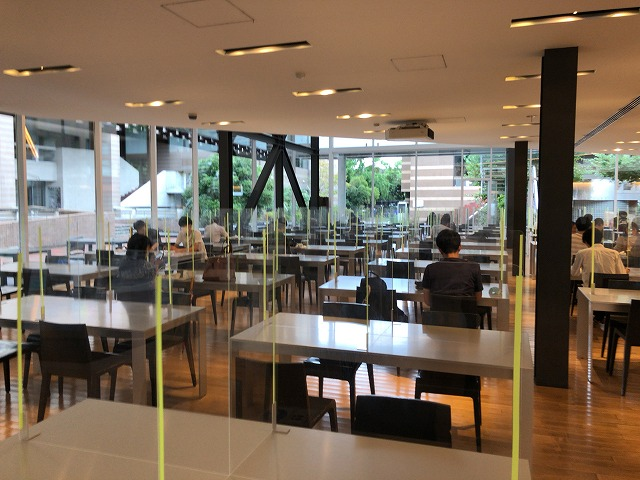
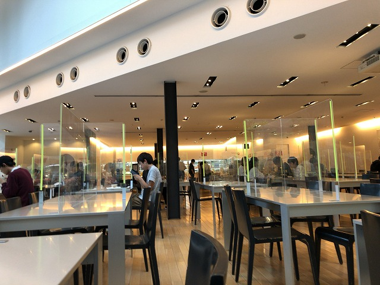
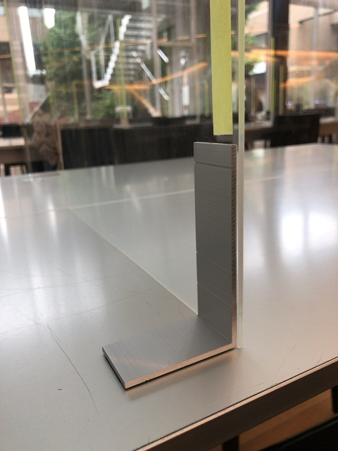
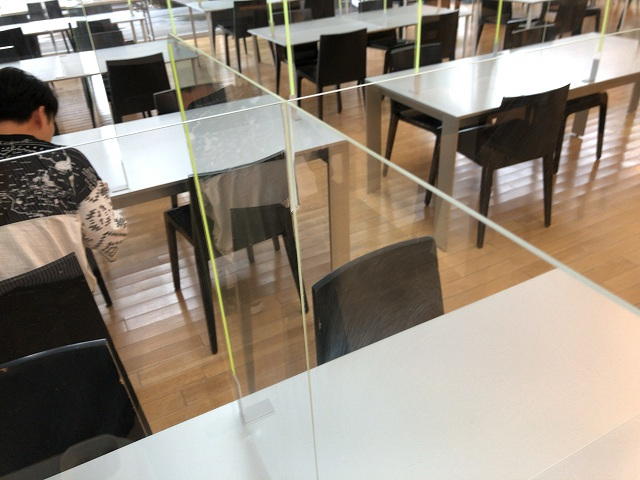
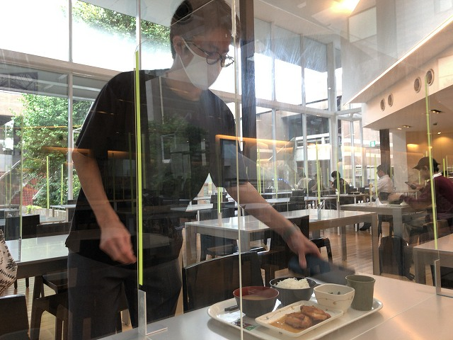
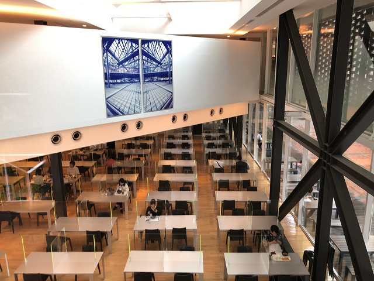
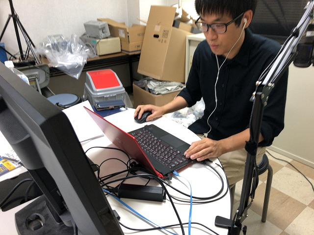
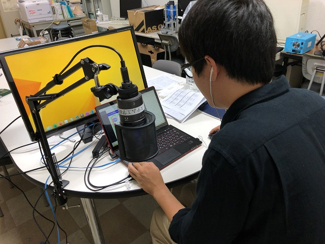

なんやかんやでお昼がまだな准教授の人とI口さんの打ち合わせ時間が来てしまい、まずは二人でご飯を食べようと食堂へ。コロナ対策がすごかったです。
現代アートやん！
4つに区切られてる
すごー
ちゃんと角はやすってある優しさ
結構な高さ
I口さん到着

声が聞こえにくいので黙って食べました
いやーすごい
いっぽう今日が可視化の本番のM2Y山さん
準備はバッチリ
| ・ プラザKIT (R02.09.25) | |||
なんやかんやでお昼がまだな准教授の人とI口さんの打ち合わせ時間が来てしまい、まずは二人でご飯を食べようと食堂へ。コロナ対策がすごかったです。 |
|||
|

現代アートやん！ |
4つに区切られてる | ||
|

すごー |

ちゃんと角はやすってある優しさ | ||
|

結構な高さ |

I口さん到着 | ||
|
声が聞こえにくいので黙って食べました |

いやーすごい | ||
|

いっぽう今日が可視化の本番のM2Y山さん |

準備はバッチリ | ||